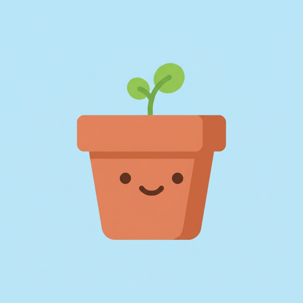
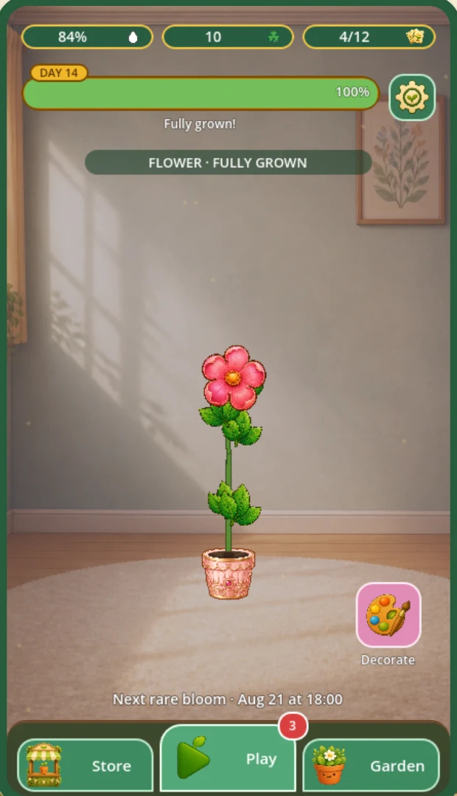
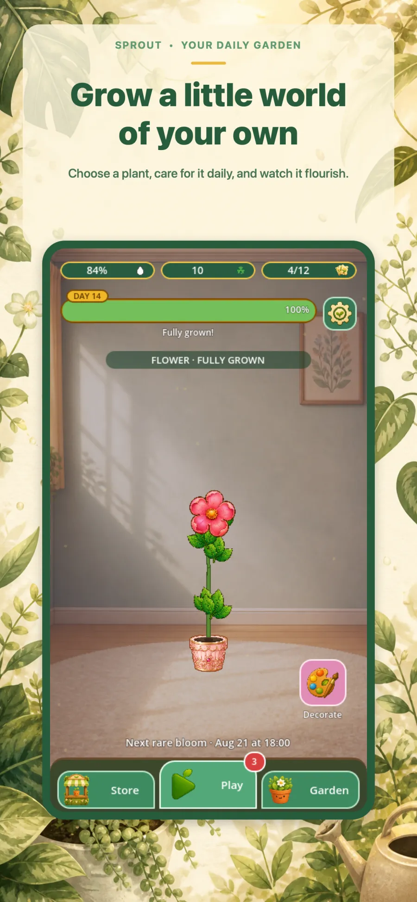
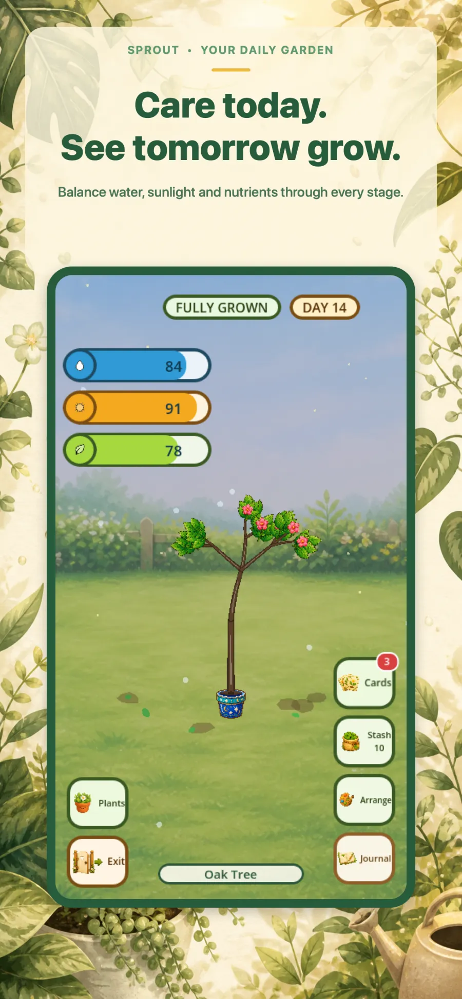
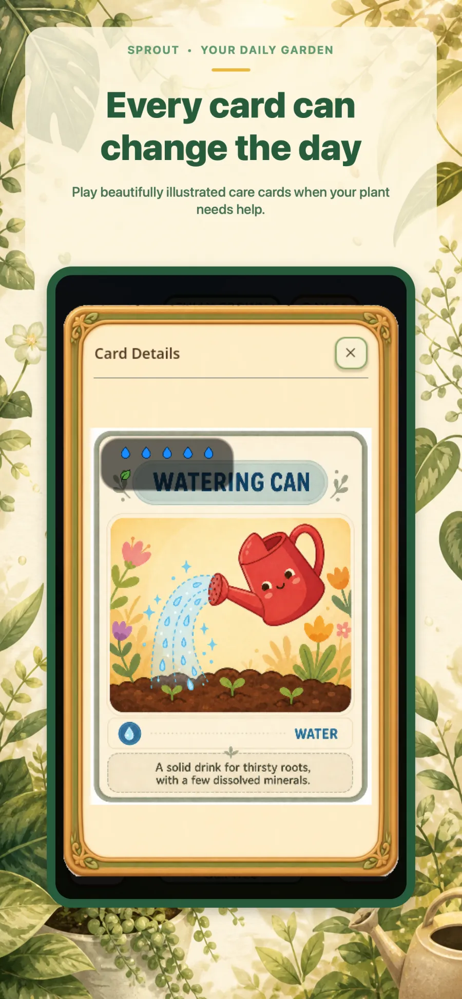
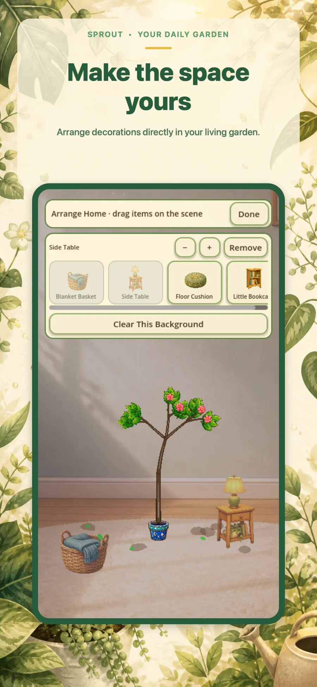
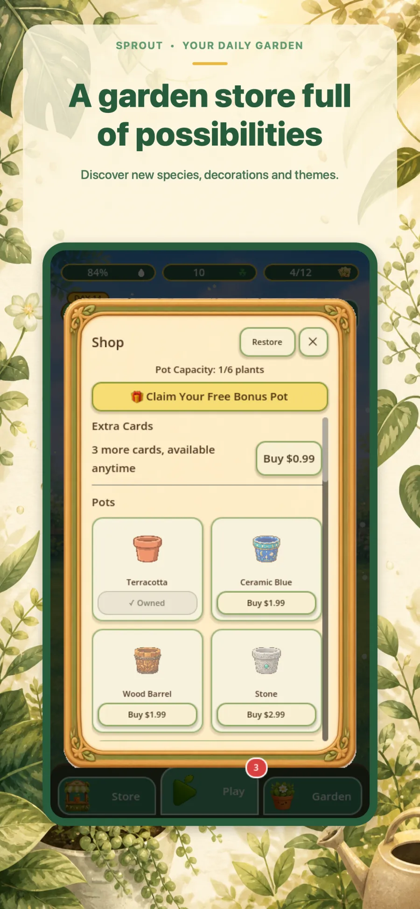

Draw
Three cards from a deck of nineteen, once every real day. The draw is weighted toward whatever meter is running critical — but it never just hands you a full top-off.

Sprout is a cozy plant-care game with no timers to beat and nothing to grind. Every real day your garden gets one pack of three care cards. Play them on the plant that needs them most — then close the app and come back tomorrow.

Your plants drink, soak up sun and use up nutrients whether the app is open or not. Miss a few days and you’ll come back to thirsty plants and a bit of a mess — exactly like the real thing.
Three cards from a deck of nineteen, once every real day. The draw is weighted toward whatever meter is running critical — but it never just hands you a full top-off.
Play a card now or bank it for a worse day — your shelf holds twelve. Aphids, ants and weeds move in from day three and drain the plant while they stay.
Six stages from Seed to Fully Grown, with the camera pulling back to keep the canopy in frame. Keep all three meters healthy and you get there in two weeks.
Each plant is procedurally generated from its own seed, so no two trees ever branch the same. Portrait, one hand, no loading screens between you and the garden.





Water, sun and nutrients are the three meters. Everything else in the deck is there to buy you time, clear a threat or tip a bad week back in your favour.
Every species has a genuinely different silhouette, foliage timing and bloom behaviour — and each pot on the shelf runs its own meters, threats and growth clock.
Terracotta, ceramic blue, wood barrel, carved stone and rose gold — each one adds another slot to the shelf.
Ordinary, Elegant, Playful, Nature and Childish — all nineteen cards re-illustrated end to end.
Garden, Home and Office. Pick clovers off the ground while you play; ten trade in for a random card.
Sprout is built by Decoded Lemon. If you want a game, an app or a platform made with this much attention to the small stuff, we’d like to hear about it.